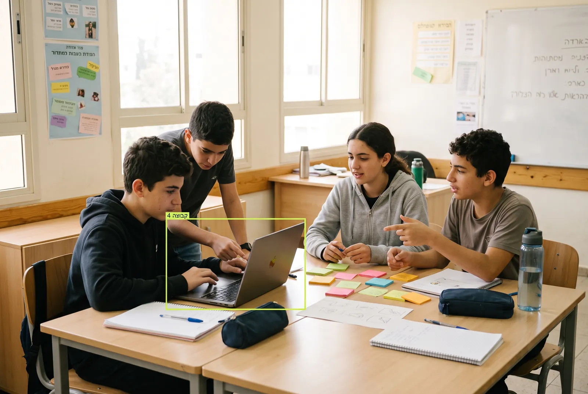
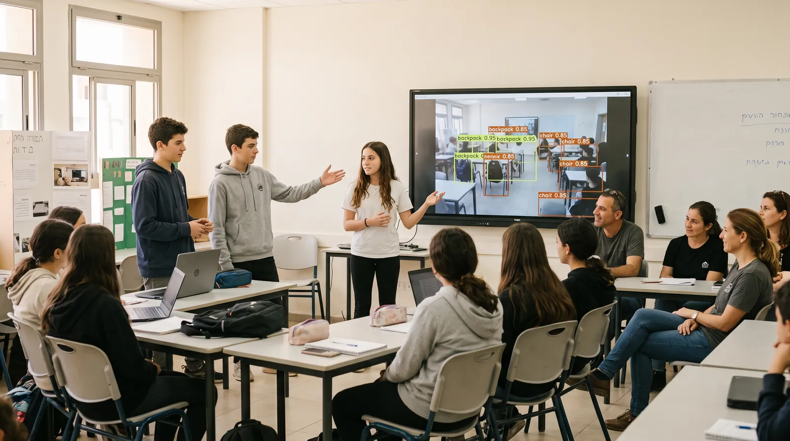
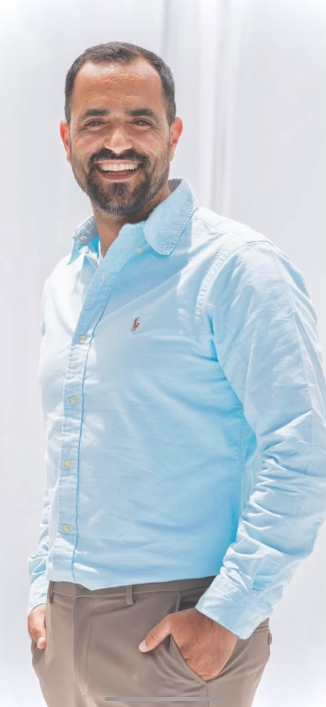
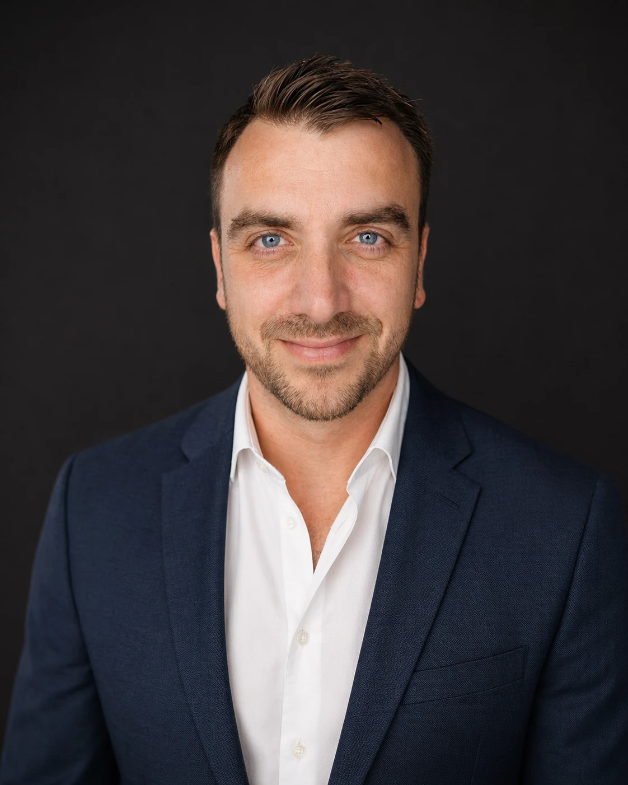
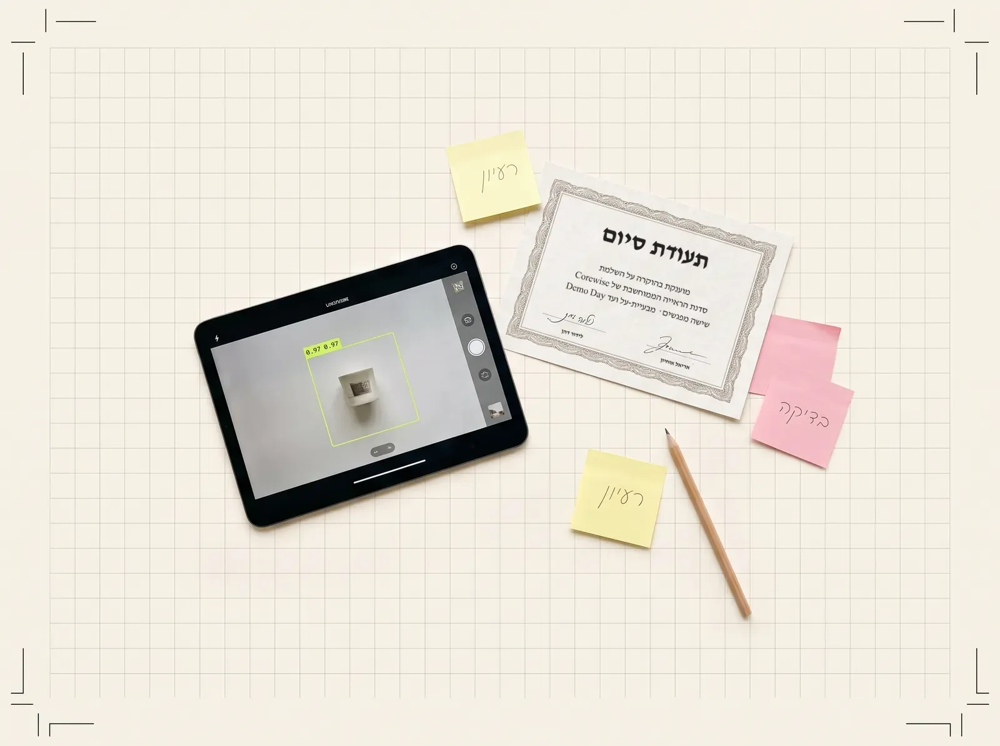

יזמות
עבודה מול דרישה של לקוח אמיתי: מגדירים יעד ומפרקים בעיה גדולה לחלקים שאפשר לפתור.
סדנה של שישה מפגשים לכיתות ז׳–ט׳, כיתה אחת בכל פעם. התלמידים מקבלים דרישה מלקוח אמיתי, מתחלקים לקבוצות של 4, מפרקים את הבעיה לתתי-בעיות, אוספים ומתייגים דאטה, מאמנים מודל ומציגים אותו ב-Demo Day מול כולם. ראייה ממוחשבת נמצאת בכל אחד מששת המפגשים.
כל מיומנות נבנית במפגשים מסוימים לאורך הסדנה. ליד כל אחת מופיע איפה היא נבנית.
עבודה מול דרישה של לקוח אמיתי: מגדירים יעד ומפרקים בעיה גדולה לחלקים שאפשר לפתור.
כל מפגש נוגע בה: הגדרת משימת הזיהוי, תיאוריה, צילום ותיוג, אימון, ומודל שמזהה מול קהל ב-Demo Day.
בונים מצגת ומציגים אותה ב-Demo Day מול קהל. כל קבוצה מסבירה מה בנתה ולמה.
כל קבוצה מחליטה בעצמה אילו תמונות לאסוף, איך לתייג אותן ואיך להציג את הפתרון.
בעיה אמיתית לא מגיעה עם הוראות. התלמידים חוקרים אותה, בודקים כיוונים ומוצאים דרך משלהם לפתרון.
כל תלמיד ותלמידה שמסיימים את הסדנה מקבלים תעודת סיום קורס מטעם Corewise.
כל סדנה נפתחת לכיתה אחת בשכבות ז׳–ט׳. הכיתה מתחלקת לקבוצות של 4, ובעיית-העל של הלקוח מתפרקת לתת-בעיה לכל קבוצה. כיתה של 40 תלמידים היא 10 קבוצות ו-10 תתי-בעיות.

מורכבות בעיית-העל תלויה ברמת הכיתה, מכיתה ז׳ ועד ט׳, והסדנה מותאמת לכל מגזר. השיטה נשארת קבועה, והתוכן מתאים את עצמו לתלמידים.
ראייה ממוחשבת נמצאת בכל אחד מששת המפגשים, מהמפגש הראשון ועד ה-Demo Day. ארבעת המפגשים הראשונים הם הבסיס: לימוד עיוני ועבודה עם חומרה. שני האחרונים מעשיים, ובהם הקבוצות מאמנות את המודל ומציגות.

המדריך מציג דרישה של לקוח אמיתי. הכיתה פותרת אותה יחד ומפרקת אותה לתתי-בעיות, כך שכל קבוצה מקבלת תת-בעיה משלה. מורכבות הבעיה מותאמת לרמת הכיתה ומתואמת מראש מול הגורמים הרלוונטיים.
הקבוצות חוקרות את תת-הבעיה בליווי מדריכים, שמסבירים את תיאוריית הראייה הממוחשבת לקבוצה ולכל תלמיד בנפרד. המטרה היא הבנה עמוקה וחקר איכותי.
כל קבוצה אוספת תמונות שקשורות לתת-הבעיה שלה ומתייגת אותן. זה החומר שעליו המודל ילמד.
הקבוצות מאמנות את המודל על הדאטה שתייגו, בודקות את התוצאות ובונות מצגת שמסבירה מה עשו ולמה.
כל קבוצה מציגה את הפתרון לתת-הבעיה שלה. יחד הן מרכיבות את הפתרון לבעיית-העל של הלקוח. בסיום כל תלמיד ותלמידה מקבלים תעודת סיום מ-Corewise.
בעיית-העל מותאמת לרמת הכיתה, והסדנה מותאמת לכל מגזר. אפשר גם לבחור פורמט מרוכז ולהוסיף טאבלטים ייעודיים.
הסדנה מותאמת לכל מגזר, בתיאום מראש מול הגורמים הרלוונטיים, יחד עם התאמת בעיית-העל לרמת הכיתה.
אפשר לאחד את הסדנה ליום האקתון אחד מרוכז, במקום שישה מפגשים נפרדים. אותם שלבים, מבעיית-העל ועד ההצגה, ביום אחד.
אפשר להעביר את הסדנה עם טאבלטים ייעודיים, בתוספת תשלום.
שני המייסדים של קורוויז מובילים את הסדנה יחד.

דוקטור להנדסת חשמל ומחשבים, עם כשש שנים בפיתוח AI לרכב אוטונומי. מוביל את המחלקה הפדגוגית בקורוויז, ומביא לסדנה את הניסיון של מי שבנה מערכות ראייה וחישה אמיתיות.

מנהל את קהילת קלוד ישראל, שמונה 27,000 חברים. מרצה, יזם ו-CTO של קורוויז, ומוביל את הפיתוח בחברה, כולל מערכות הראייה הממוחשבת.

כיתות ז׳–ט׳
שישה מפגשים של ראייה ממוחשבת, בעיית-על אחת מלקוח אמיתי, וקבוצות של 4 שכל אחת פותרת חלק ממנה. בסוף, Demo Day ותעודת סיום מ-Corewise לכל תלמיד ותלמידה.